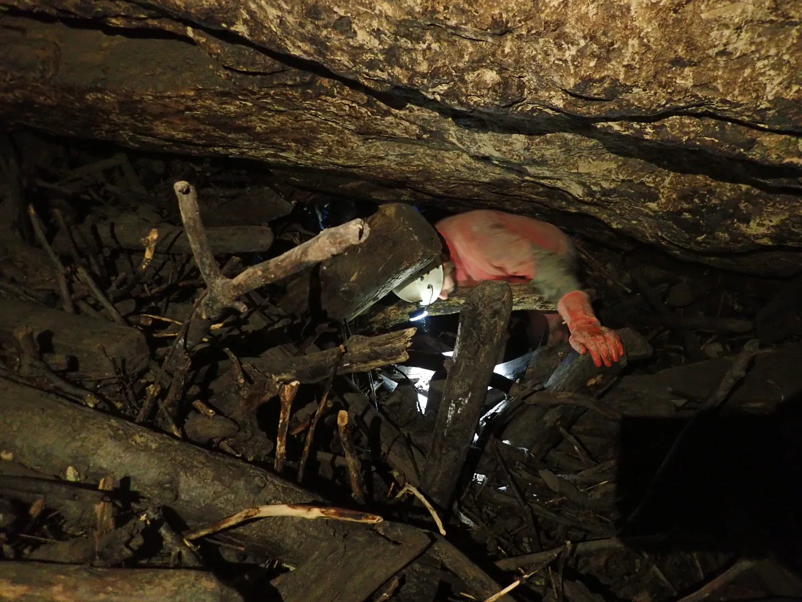

Đula-Medvedica; nakon 85 godina ponovo kroz Poljakov prolaz
Dobra vijest za špiljski sustav ispod grada Ogulina: Poljakov prolaz je ponovo otvoren. Nakon 85 godina ponovo dokumentiran Poljakov prolaz - spoj Đulinog ponora i špilje Medvedice koji je ključan za protok velikih voda…

Dobra vijest za špiljski sustav ispod grada Ogulina: Poljakov prolaz je ponovo otvoren
Nakon 85 godina ponovo dokumentiran Poljakov prolaz - spoj Đulinog ponora i špilje Medvedice koji je ključan za protok velikih voda kroz špiljskih sustav
Radi se o izuzetno bitnoj vezi Đulinog ponora i špilje Medvedice koja je ključna za problematiku dizanja vode u kanjonu i poplava. Kod većih voda odlazni sifon u Đulinom ponoru nema dovoljan kapacitet te vode mogu otjecati u dalje dijelove sustava jedino desnim kanalom kroz Poljakov prolaz.
U istraživanjima poznatog hrvatskog geologa i znanstvenika profesora Josipa Poljaka objavljenim sa prvim topografskim nacrtima davne 1935. godine vidljivo je da je on uspio proći desni kanal Đulinog ponora i ući u špilju Medvedicu. Tijekom svih kasnijih istraživanja nije se uspjelo ponovo dokumentirati prolaz desnim kanalom. Aktualni nacrt špiljskog sustava kojeg je 1984.-1985. priredio speleolog i geolog Marijan Čepelak i članovi Speleološkog odsjeka Velebit u tom dijelu dopunjen sa Poljakovim istraživanjima budući da Poljakov prolaz, kojime se iz Đulinog ponora ulazi u Poljakovu dvoranu, odnosno špilju Medvedicu nije bio prolazan.
[caption id="attachment_3213" align="alignnone" width="4000"] Provlačenje kroz naplavine u Poljakovom prolazu. 15.2.2020. Snimio: Dalibor Paar[/caption]Kako se zadnjih godina kroz suradnju Grada Ogulina i Hrvatskih voda započelo s vađenjem naplavina iz ulaznog dijela Đulinog ponora te skupljanjem naplavina koje isplivaju iz ponora tijekom poplava, posljedica toga je manji dotok novih naplavina u desni kanal. Novija istraživanja Speleološkog društva Đula-Medvedica te Speleološkog društva Velebit ukazivala su na moguću prolaznost tog kanala. S obzirom da se radi o labirintu u kome nije lako određivati položaj, odlučeno je da će se pokušati proći desni kanal uz istovremenu izradu poligonskog vlaka kako bi se pratila točna pozicija u špiljskom sustavu. Kao što se vidi na nacrtu, članovi Speleološkog društva Velebit su 15. veljače 2020. desnim kanalom Đulinog ponora uspješno prošli kroz Poljakov prolaz i Poljakovu dvoranu i ušli u daljnje prostrane kanale špilje Medvedice.
Treba naglasiti da se u desnom kanalu, a posebice u Poljakovom prolazu i Poljakovoj dvorani danas nalaze velike količine naplavina, tako da unatoč tome što su se speleolozi uspjeli provući kroz naplavine, one sigurno znatno otežavaju protok vode. Stoga je važno dalje nastaviti sa izvlačenjem naplavina iz ulaznog dijela i tijekom dizanja vode u kanjonu do sveobuhvatnog rješenja koje će sustavnim izvlačenjem naplavina i instalacijom rešetki osigurati veći protok vode kroz špiljski sustav.
[caption id="attachment_3212" align="alignnone" width="1807"] Nakon 85 godina dokumentiran je prolaz iz Đulinog ponora u špilju Medvedicu.[/caption][gallery ids="3225,3226,3227,3228,3229,3230,3231,3232,3233,3212,3213" type="rectangular"]Sudionici istraživanja: Dalibor Paar, Marijan Sutlović, Gorana Sačer, Tea Selaković, Valentina Plemenčić
Svoje impresije prenijela nam je Tea Selaković: Svi koji su bili u Đuli znaju da to i nije najomiljenije iskustvo špiljara. Otpadne vode, naplavine i razni ostaci naše plastik civilizacije sakupljaju se na samom početku te ogulinske ljepotice. Istraživački duh i znatiželja potaknuli su nas da gurnemo glave, a onda i ostatak tijela kroz prolaz koji je očito bio premalen za prolaz čovjeka. Možda za čovjeka ali ne i špiljara, ne ovaj put! :) Jedna grana amo, druga tamo, zrak obećavajuće struji! Ovog puta nas Đula nije ostavila praznih ruku, trud i ludu upornost je nagradila prolazom u predivne kanale: Vodom oblikovan labirint ostavio nas je oduševljenima, u potpunosti u suprotnosti od ulaza, unutrašnjost je predivna čarolija oblika i boja.